|
Introduction
Download Homepage |
Tutorial (using Graphical User Interface)
Prerequisites
- Java JRE 5 or above (
 download)
download)
- R-DBMS with JDBC-driver
- jailer_2.0.zip
Step 1. Setup Jailer
Unpack jailer_2.0.zip:| $unzip jailer_2.0.zip $cd jailer_2.0 $ll drwxr-xr-x 3 wisser users 72 2007-12-04 16:10 admin -rw-r--r-- 1 wisser users 1754 2007-12-04 16:09 build.xml drwxr-xr-x 2 wisser users 176 2007-12-04 16:10 config drwxr-xr-x 2 wisser users 320 2007-12-04 16:17 datamodel drwxr-xr-x 3 wisser users 72 2007-12-04 16:09 doc drwxr-xr-x 2 wisser users 80 2007-12-04 16:10 domainmodel drwxr-xr-x 4 wisser users 96 2007-12-04 16:10 epilog drwxr-xr-x 2 wisser users 128 2007-12-04 16:10 extractionmodel -rw-r--r-- 1 wisser users 381 2007-12-04 16:09 jailer.bat -rw-r--r-- 1 wisser users 411 2007-12-04 16:09 jailerGUI.bat -rw-r--r-- 1 wisser users 354 2007-12-04 16:09 jailerGUI.sh -rw-r--r-- 1 wisser users 258952 2007-12-04 16:09 jailer.jar -rw-r--r-- 1 wisser users 335 2007-12-04 16:09 jailer.sh drwxr-xr-x 2 wisser users 216 2007-12-04 16:09 lib -rw-r--r-- 1 wisser users 10172 2007-12-04 16:09 license.txt drwxr-xr-x 4 wisser users 96 2007-12-04 16:10 prolog -rw-r--r-- 1 wisser users 337 2007-12-04 16:09 README -rw-r--r-- 1 wisser users 710 2007-12-04 16:09 releasenotes.txt drwxr-xr-x 2 wisser users 80 2007-12-04 16:10 render drwxr-xr-x 2 wisser users 88 2007-12-04 16:10 restrictionmodel drwxr-xr-x 10 wisser users 312 2007-12-04 16:10 script drwxr-xr-x 3 wisser users 72 2007-12-04 16:10 src drwxr-xr-x 2 wisser users 312 2007-12-04 16:10 template |
Step 2. Setup the Database
Create a new database schema and execute | $db2 connect to wisser user scott using tiger $db2 -tvf script/scott-tiger.sql |
Step 3. Building the data model
Start the GUI (jailerGUI.bat on windows platform)
| $ sh jailerGUI.sh |
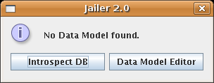
Jailer needs to know all the tables and all associations between them, so we must tell him. Fortunately most of the model definitions can be generated automatically from introspection of the relational database.
Click on "Introspect DB":
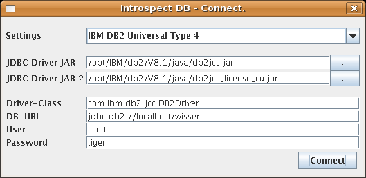
Select the setting for your DBMS and enter the connection parameter, then click on "Connect".
Jailer finds three tables and two associations:
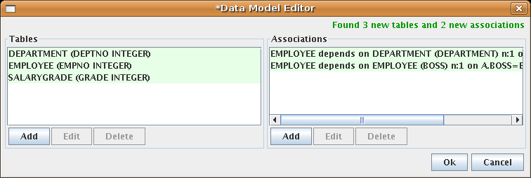
One association is still missing: an employee is classified into a salary grade depending on his salary.
Add this definition manually (Add-Button under Associations):
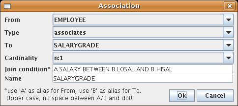
Note that Jailer now knows more about the data model than the DBMS.
Step 4. Examine the data model |
1 |
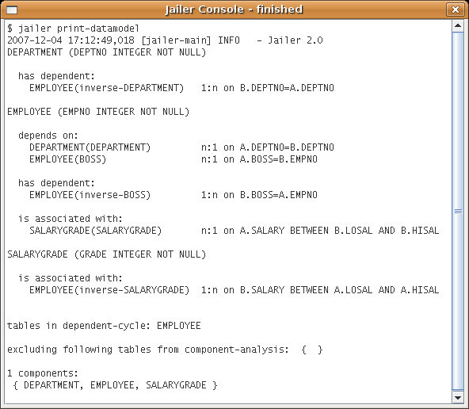
Note that each association is listed twice. While associations are undirected, restrictions on them are directed. We will see later for what restrictions are good for and how to define them.
Step 5. Export evil Scott (unrestricted)
Now lets try to export the employee named Scott. To do that we need an extraction-model.Select EMPLOYEE as table to extract from and type NAME='SCOTT' into the Where-field:
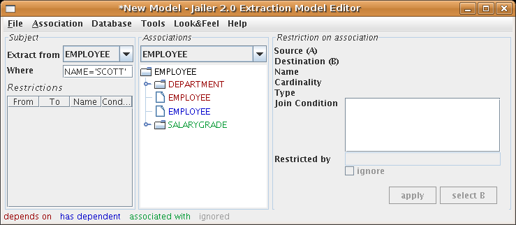
This extraction model describes a set of entities containing (the) employee(s) named 'SCOTT', entities associated with these employees, entities associated with these entities and so forth.
Export this set (Tools->Export Data). Jailer first asks for a file name for the new model, call it scott.csv. Then the Data Export dialog appears:
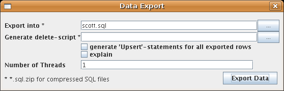
Type scott.sql into the first field. This defines the name of the export file to be generated. Click on Export Data:
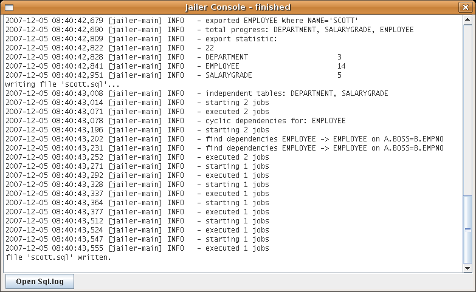
Jailer generates a file
But why are there also statements for all other employees?
Let Jailer explain why:
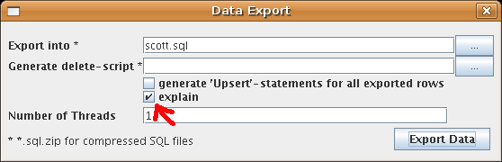
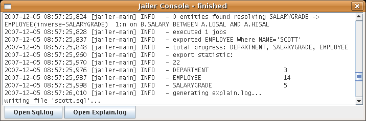
Open the Explain.log:
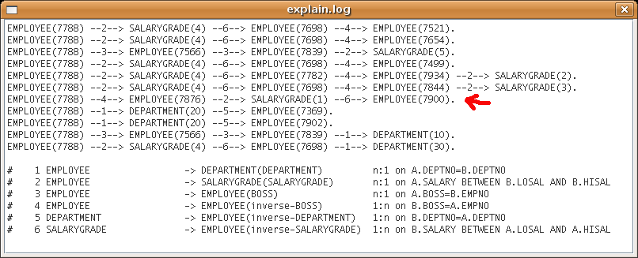
Scotts is Adams boss and James and Adams are both classified in the same salary-grade.
Step 6. Export evil Scott (restricted)
If we export an employee we must export his boss and department too! Otherwise the set of exported entities would not be consistent (due to the foreign key constraints). No constraint prevents us from excluding the salary-grade from export, but we should'nt do that becauses the resulting set would also be inconsistent.To exclude subordinates, 'same department'-members and 'same salary-grade'-employees, we must restrict some associations. To do so, define some restrictions:
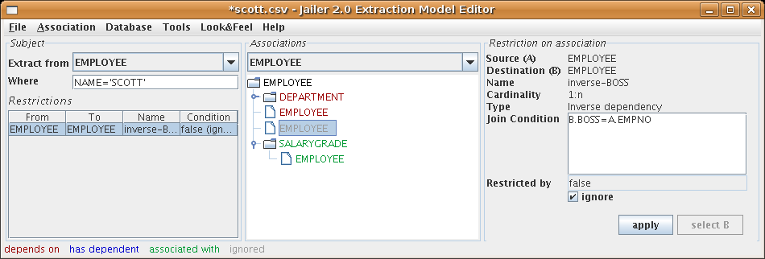
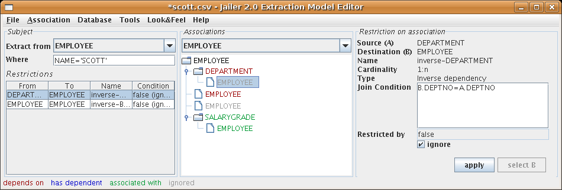
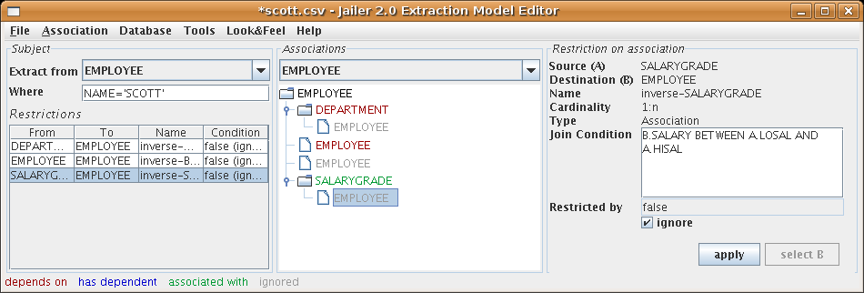
The restriction-condition is an extension of the associations join-condition (expressed in SQL-syntax) for one direction of an association. "ignore" or "false" stands for an unsatisfiable condition.
You can examine the restrictions the same way you examined the data model by using "Tools->Print Data Model":
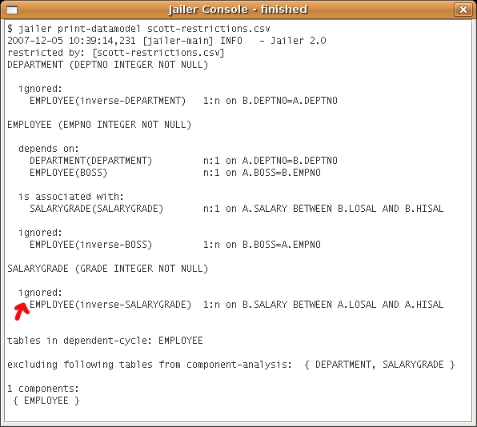
Use "Tools->Export Data" again and look what Jailer extracts now:
| scott.sql |
| -- generated by Jailer at Wed Dec 05
18:49:03 CET 2007 from wisser@desktop -- -- extraction model: EMPLOYEE where NAME='SCOTT' (extractionmodel/scott.csv) -- database URL: jdbc:db2://localhost/wisser -- database user: scott -- exported entities: 7 -- DEPARTMENT 2 -- EMPLOYEE 3 -- SALARYGRADE 2 Insert into DEPARTMENT(DEPTNO, NAME, LOCATION) values (20, 'RESEARCH', 'DALLAS'), (10, 'ACCOUNTING', 'NEW YORK'); Insert into SALARYGRADE(GRADE, LOSAL, HISAL) values (4, 2001, 3000), (5, 3001, 9999); Insert into EMPLOYEE(EMPNO, NAME, JOB, BOSS, HIREDATE, SALARY, COMM, DEPTNO) values (7839, 'KING', 'PRESIDENT', null, '1981-11-17', 5000.00, null, 10); Insert into EMPLOYEE(EMPNO, NAME, JOB, BOSS, HIREDATE, SALARY, COMM, DEPTNO) values (7566, 'JONES', 'MANAGER', 7839, '1981-04-02', 2975.00, null, 20); Insert into EMPLOYEE(EMPNO, NAME, JOB, BOSS, HIREDATE, SALARY, COMM, DEPTNO) values (7788, 'SCOTT', 'ANALYST', 7566, '1982-12-09', 3000.00, null, 20); |
Freedom for the innocent!
Step 7. Delete Scott (unsuccessful)
It is also possible to create DML-scripts for deletion of exported entities: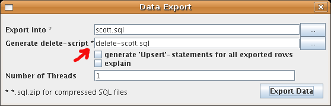
| delete-scott.sql |
| -- generated by Jailer at Wed Dec 05
19:17:47 CET 2007 from wisser@desktop -- -- extraction model: EMPLOYEE where NAME='SCOTT' (extractionmodel/scott.csv) -- database URL: jdbc:db2://localhost/wisser -- database user: scott -- exported entities: 7 -- DEPARTMENT 2 -- EMPLOYEE 3 -- SALARYGRADE 2 -- -- Tabu-tables: { } -- -- entities to delete: 0 |
Jailer has exported 7 entities but didn't delete anything! That's because deleting Scott but not Scotts subordinate (who is not in the set defined by the extraction-model!) would violate the integrity of the data base.
Step 8. Delete Scott
In order to delete Scott, me must delete his subordinate too. To do so, relax the restriction on the inverse-BOSS-association:
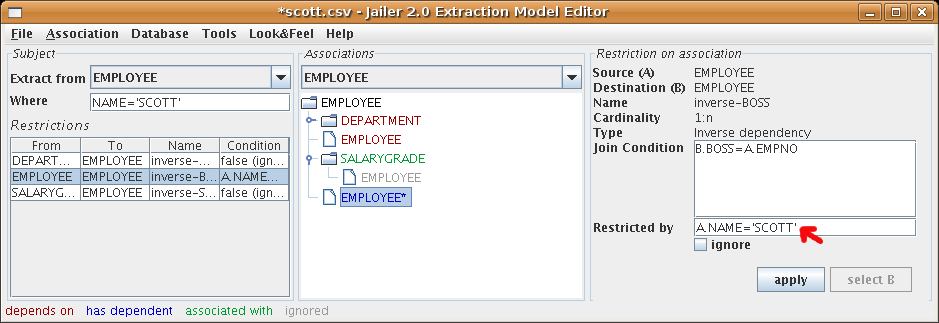and "Export Data" again:
| delete-scott.sql |
| -- generated by Jailer at Wed Dec 05
19:23:48 CET 2007 from wisser@desktop -- -- extraction model: EMPLOYEE where NAME='SCOTT' (extractionmodel/scott.csv) -- database URL: jdbc:db2://localhost/wisser -- database user: scott -- exported entities: 9 -- DEPARTMENT 2 -- EMPLOYEE 4 -- SALARYGRADE 3 -- -- Tabu-tables: { } -- -- entities to delete: 2 -- EMPLOYEE 2 (-2) Delete from EMPLOYEE Where EMPNO in (7876); Delete from EMPLOYEE Where EMPNO in (7788); |
The file delete-scott.sql contains Delete-statements for Scott and Adams.
Note that scott.sql now contains Insert-statements for Adams and his salary-grade too.